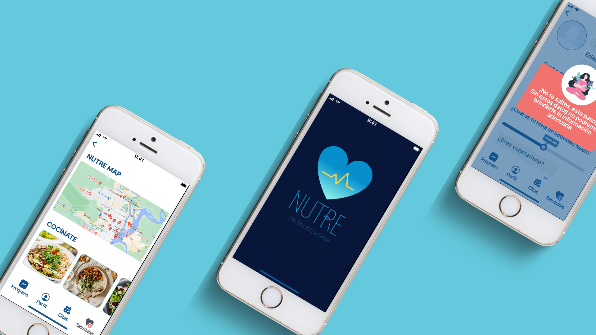

Duración del proyecto
3 semanas
Cliente
The national wellness institute
Rol
Diseño UI/UX
Duración del proyecto
3 semanas
Cliente
The national wellness institute
Rol
Diseño UI/UX
FIGMA
ZOOM
GOOGLE SUITE
The National Wellness Institute se formó oficialmente en 1977, nació de la idea de que, como seres humanos, podríamos vivir vidas mejores y más saludables a través de los principios de equilibrio y conciencia. Llegando a ser líder en proporcionar oportunidades de desarrollo profesional y compromiso que apoyan a personas de una variedad de disciplinas en la promoción del bienestar.
Proceso:
Realizamos una investigación de escritorio, que nos ayudó a entender a profundidad la nutrición que es y los términos que se usan. En el proceso pudimos observar a la competencia y conocer las interfaces de diferentes apps de la misma rama.
Generamos encuestas y entrevistas, las cuales nos dieron como resultado información cualitativa y cuantitativa. Lo más esencial que podemos destacar es los siguientes:
-Los usuarios que usan apps de dietas son mujeres en un promedio de 24 a 45 años.
-Los usuarios se sienten frustradas al no poder cocinar su propia comida en días laborales y no llega a cumplir sus metas.
-Varios usuarios no se sienten acompañados en el proceso y provoca que no sean constantes al hacer su dieta y tengan un estado de ánimo bajo y no usen constantemente la aplicación.
Estos y varios resultados más nos ayudaron a definir los atributos de marca, creando un estilo fresco y definiendo el target directo a mujeres que se sientan acompañadas en su proceso por profesionales mujeres tanto en nutrición como en psicología.
A través de la entrevista con la nutricionista definimos que la app generara una dieta personalizada y única, no tendrá o se manejara con dietas a la moda.
Con estos parámetros desarrollamos un User persona donde pudimos conocer sus frustraciones y ganancias, entendiendo sus necesidades y dándole una voz al crear su User Storie.
Ideando y esbozando, creamos la arquitectura de la información; realizamos nuestros primeros wireframes, nuestro user flow, Sitemap y por último cramos nuestra Style Guide y realizamos un Card sorting para no quedarnos con las dudas al aire.
Generamos nuestro prototipo, las interfaces y realizamos nuestra prueba de usabilidad. Corregimos, corregimos y volvimos a corregir hasta sentirnos satisfechos con los resultados.
Refleja salud, bienestar ya la vez se ve fresca y actual.
Favorece la accesibilidad y la inclusión de todos los usuarios.
Los usuarios se sienten acompañadas en todo momento.